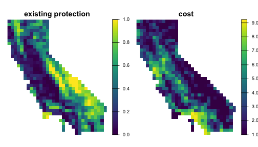
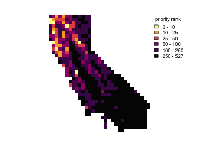
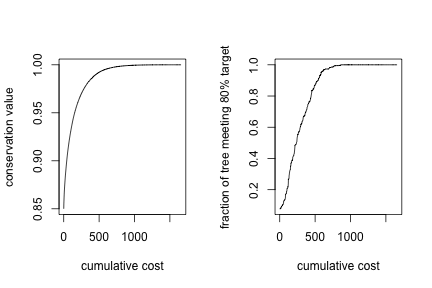
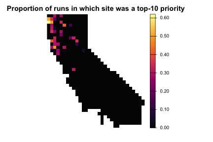
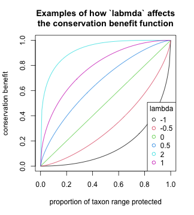
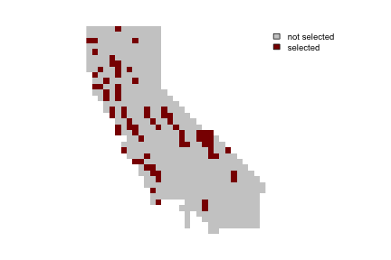

Introduction
Phylogenetic diversity was originally conceived as a metric to inform conservation (Faith, 1992), and spatial conservation planning remains a core application of spatial phylogenetics. Spatial conservation planning involves identifying priority locations for actions like the creation of new protected areas.
There are a diversity of sophisticated tools available for
conservation planning. This package offers two complementary approaches.
The first is its own greedy stepwise algorithm, implemented in
ps_prioritize(), which ranks every site in the study area
by conservation priority. The second is ps_prioritizr(),
which sets up a conservation planning problem that can be solved with
the prioritizr package, which uses
integer linear programming to find optimal solutions and offers a wider
range of planning features. Both approaches account for evolutionary
relationships among all lineages (terminal taxa and larger clades), can
use quantitative community data (rather than just binary
presence-absence data), and can use quantitative data on the relative
degree of protection offered by different types of protected area
(rather than just binary protected-unprotected data).
The two approaches answer somewhat different questions:
-
ps_prioritize()produces a ranking of sites. Rankings are nested, meaning the top 10 sites are always part of the top 20, which suits situations where protection will be added incrementally or opportunistically over time, or where no specific budget or target has been set. Its benefit function rewards protecting more of every lineage’s range without requiring a hard target, and its probabilistic mode reveals alternative sites of similar value. It requires no additional software. However, stepwise selection is not guaranteed to find the best possible set of sites for any particular budget, and it does not support spatial design considerations such as reserve compactness or connectivity. -
ps_prioritizr()produces an optimal solution to a specific planning problem, such as the cheapest set of sites that protects 30% of every lineage’s range, or the best set of sites within a fixed budget. Its targets map directly onto policy goals, and the resulting problem can be extended with any of prioritizr’s constraints and penalties, such as locking particular sites in or out, or favoring spatially compact reserve networks. However, it requires prioritizr and an optimization solver, solutions for different budgets are not nested, and some problems can be slow to solve to optimality.
The two can also be used together. For example, a
ps_prioritize() ranking can guide the sequence of
acquisitions, while ps_prioritizr() shows what an optimal
network looks like for a given budget or target.
This vignette covers greedy stepwise prioritization (including performance curves, probabilistic prioritization, and conservation benefit functions), followed by optimization with prioritizr. Both use the package’s example data set for California mosses.
Greedy stepwise prioritization via ps_prioritize()
ps_prioritize() performs conservation prioritization
using a greedy stepwise algorithm that selects an ordered ranking of
priority sites for the creation of new protected areas. A site’s
priority ranking is a function of:
- its current protection level
- the occurrence quantities for all lineages present in the site, including terminal taxa and larger clades
- the evolutionary branch lengths of these lineages on the phylogeny, which represent their unique evolutionary heritage
- the impact that protecting the site would have on these lineages’ range-wide protection levels
- the compositional complementarity between the site, other high-priority sites, and existing protected areas
- the relative cost of protecting the site
- lambda, a free parameter determining the shape of the conservation benefit function (see below)
Let’s perform a conservation optimization that ranks every grid cell across the state.
At every step of the iterative ps_prioritize()
algorithm, the marginal value of fully protecting each individual site
is calculated. Under a basic optimization
(method = "optimal"), the site with the highest marginal
value is marked as protected, marginal values are re-calculated, and
this process is repeated until all sites (or max_iter
sites) are protected. Sites selected earlier in the process are
considered higher priority.
In addition to the required spatial phylogenetic data set, there are
two other optional data inputs that one might want to provide. The first
is init, the location and effectiveness of existing
protected areas. This can be binary data representing protected versus
unprotected sites, or continuous data with values between 0 and 1
representing the degree of protection (for example, perhaps because a
given spatial unit is only partially covered by protected land, or
because land management in sites like national forests is only partly
oriented toward biodiversity protection). During the conservation
optimization, the protection level for newly protected sites is raised
to 1 (or to an alternative level specified by the parameter
protection), with greater benefit resulting from sites with
lower initial values.
The second optional variable is cost, representing the
relative cost of protecting different sites across the study area. Sites
with high benefit-to-cost ratios are prioritized. Both inputs can be
supplied as vectors (with length equal to ps$n_sites, the
total number of grid cells including unoccupied ones), or as spatial
data matching the spatial element of our data set.
First let’s load the libraries we’ll need, and initialize a
phylospatial data set using the example data for California
mosses. (See vignette("phylospatial-data") for details on
constructing phylospatial objects.) The moss()
function can also load two companion layers on the same grid, which
we’ll use as our init and cost inputs. The
"protection" layer gives the existing protection level of
each grid cell, ranging from 0 to 1, based on the California Protected
Areas Database and California Conservation Easement Database. The
"popdens" layer gives human population density, which we’ll
use as a rough proxy for the cost of protecting land. Population density
varies by several orders of magnitude, so we’ll log-transform it so that
cost doesn’t overwhelm biodiversity value, and add 1 so that every site
has a nonzero cost.
library(phylospatial); library(terra)
ps <- moss()
init <- moss(data = "protection")
cost <- 1 + log1p(moss(data = "popdens"))
plot(c(init, cost), main = c("existing protection", "cost"), axes = FALSE)
Now we’ll pass those inputs to ps_prioritize(). Plotting
the result, the highest-priority sites are those with low rank values,
shown in yellow. Since the differences that matter most are among the
top-ranked sites, we’ll color the ranks in classes of increasing
width:
priority <- ps_prioritize(ps, init = init, cost = cost)
#>
|
| | 0%
|
|= | 0%
|
|= | 1%
|
|== | 1%
|
|== | 2%
|
|=== | 2%
|
|==== | 3%
|
|===== | 3%
|
|===== | 4%
|
|====== | 4%
|
|====== | 5%
|
|======= | 5%
|
|======== | 6%
|
|========= | 6%
|
|========= | 7%
|
|========== | 7%
|
|========== | 8%
|
|=========== | 8%
|
|============ | 9%
|
|============= | 9%
|
|============= | 10%
|
|============== | 10%
|
|=============== | 11%
|
|================ | 11%
|
|================ | 12%
|
|================= | 12%
|
|================= | 13%
|
|================== | 13%
|
|=================== | 14%
|
|==================== | 14%
|
|==================== | 15%
|
|===================== | 15%
|
|===================== | 16%
|
|====================== | 16%
|
|======================= | 17%
|
|======================== | 17%
|
|======================== | 18%
|
|========================= | 18%
|
|========================= | 19%
|
|========================== | 19%
|
|=========================== | 19%
|
|=========================== | 20%
|
|============================ | 20%
|
|============================ | 21%
|
|============================= | 21%
|
|============================== | 22%
|
|=============================== | 22%
|
|=============================== | 23%
|
|================================ | 23%
|
|================================ | 24%
|
|================================= | 24%
|
|================================== | 24%
|
|================================== | 25%
|
|=================================== | 25%
|
|=================================== | 26%
|
|==================================== | 26%
|
|==================================== | 27%
|
|===================================== | 27%
|
|====================================== | 28%
|
|======================================= | 28%
|
|======================================= | 29%
|
|======================================== | 29%
|
|========================================= | 30%
|
|========================================== | 30%
|
|========================================== | 31%
|
|=========================================== | 31%
|
|=========================================== | 32%
|
|============================================ | 32%
|
|============================================= | 33%
|
|============================================== | 33%
|
|============================================== | 34%
|
|=============================================== | 34%
|
|=============================================== | 35%
|
|================================================ | 35%
|
|================================================= | 35%
|
|================================================= | 36%
|
|================================================== | 36%
|
|================================================== | 37%
|
|=================================================== | 37%
|
|=================================================== | 38%
|
|==================================================== | 38%
|
|===================================================== | 38%
|
|===================================================== | 39%
|
|====================================================== | 39%
|
|====================================================== | 40%
|
|======================================================= | 40%
|
|======================================================== | 41%
|
|========================================================= | 41%
|
|========================================================= | 42%
|
|========================================================== | 42%
|
|========================================================== | 43%
|
|=========================================================== | 43%
|
|============================================================ | 43%
|
|============================================================ | 44%
|
|============================================================= | 44%
|
|============================================================= | 45%
|
|============================================================== | 45%
|
|============================================================== | 46%
|
|=============================================================== | 46%
|
|================================================================ | 46%
|
|================================================================ | 47%
|
|================================================================= | 47%
|
|================================================================= | 48%
|
|================================================================== | 48%
|
|=================================================================== | 49%
|
|==================================================================== | 49%
|
|==================================================================== | 50%
|
|===================================================================== | 50%
|
|===================================================================== | 51%
|
|====================================================================== | 51%
|
|======================================================================= | 52%
|
|======================================================================== | 52%
|
|======================================================================== | 53%
|
|========================================================================= | 53%
|
|========================================================================= | 54%
|
|========================================================================== | 54%
|
|=========================================================================== | 54%
|
|=========================================================================== | 55%
|
|============================================================================ | 55%
|
|============================================================================ | 56%
|
|============================================================================= | 56%
|
|============================================================================= | 57%
|
|============================================================================== | 57%
|
|=============================================================================== | 57%
|
|=============================================================================== | 58%
|
|================================================================================ | 58%
|
|================================================================================ | 59%
|
|================================================================================= | 59%
|
|================================================================================== | 60%
|
|=================================================================================== | 60%
|
|=================================================================================== | 61%
|
|==================================================================================== | 61%
|
|==================================================================================== | 62%
|
|===================================================================================== | 62%
|
|====================================================================================== | 62%
|
|====================================================================================== | 63%
|
|======================================================================================= | 63%
|
|======================================================================================= | 64%
|
|======================================================================================== | 64%
|
|======================================================================================== | 65%
|
|========================================================================================= | 65%
|
|========================================================================================== | 65%
|
|========================================================================================== | 66%
|
|=========================================================================================== | 66%
|
|=========================================================================================== | 67%
|
|============================================================================================ | 67%
|
|============================================================================================= | 68%
|
|============================================================================================== | 68%
|
|============================================================================================== | 69%
|
|=============================================================================================== | 69%
|
|=============================================================================================== | 70%
|
|================================================================================================ | 70%
|
|================================================================================================= | 71%
|
|================================================================================================== | 71%
|
|================================================================================================== | 72%
|
|=================================================================================================== | 72%
|
|==================================================================================================== | 73%
|
|===================================================================================================== | 73%
|
|===================================================================================================== | 74%
|
|====================================================================================================== | 74%
|
|====================================================================================================== | 75%
|
|======================================================================================================= | 75%
|
|======================================================================================================= | 76%
|
|======================================================================================================== | 76%
|
|========================================================================================================= | 76%
|
|========================================================================================================= | 77%
|
|========================================================================================================== | 77%
|
|========================================================================================================== | 78%
|
|=========================================================================================================== | 78%
|
|============================================================================================================ | 79%
|
|============================================================================================================= | 79%
|
|============================================================================================================= | 80%
|
|============================================================================================================== | 80%
|
|============================================================================================================== | 81%
|
|=============================================================================================================== | 81%
|
|================================================================================================================ | 81%
|
|================================================================================================================ | 82%
|
|================================================================================================================= | 82%
|
|================================================================================================================= | 83%
|
|================================================================================================================== | 83%
|
|=================================================================================================================== | 84%
|
|==================================================================================================================== | 84%
|
|==================================================================================================================== | 85%
|
|===================================================================================================================== | 85%
|
|===================================================================================================================== | 86%
|
|====================================================================================================================== | 86%
|
|======================================================================================================================= | 87%
|
|======================================================================================================================== | 87%
|
|======================================================================================================================== | 88%
|
|========================================================================================================================= | 88%
|
|========================================================================================================================= | 89%
|
|========================================================================================================================== | 89%
|
|=========================================================================================================================== | 90%
|
|============================================================================================================================ | 90%
|
|============================================================================================================================ | 91%
|
|============================================================================================================================= | 91%
|
|============================================================================================================================== | 92%
|
|=============================================================================================================================== | 92%
|
|=============================================================================================================================== | 93%
|
|================================================================================================================================ | 93%
|
|================================================================================================================================ | 94%
|
|================================================================================================================================= | 94%
|
|================================================================================================================================== | 95%
|
|=================================================================================================================================== | 95%
|
|=================================================================================================================================== | 96%
rank_breaks <- c(0, 10, 25, 50, 100, 250, global(priority, "max", na.rm = TRUE)[[1]])
plot(priority, breaks = rank_breaks, col = rev(hcl.colors(6, "inferno")),
axes = FALSE, plg = list(title = "priority rank"))
Performance curves
To see how conservation value accumulates as sites are added in
priority order, we can pass the prioritization result to
ps_performance(), along with the data set used to create
it. This returns a data frame with one row per step, tracking the
cumulative number of sites, cost, and protection added
(gain, which differs from the number of sites when some
sites are already partially protected), along with the network’s
conservation value. This is the quantity that
ps_prioritize() optimizes: the branch-length-weighted sum
of every lineage’s conservation benefit, which ranges from 0 to 1. Step
0 represents the starting state, which in our case is greater than zero
because of the existing protection in init.
The curves also report target-based coverage: for each value supplied
to target, the fraction of the tree’s total branch length
belonging to lineages with at least that fraction of their range
protected. Here we’ll look at 30% and 80% range protection targets.
perf <- ps_performance(ps, priority, target = c(.3, .8))
head(perf)
#> ranking step site site_cost site_gain site_value n_sites cost gain value cov30 cov80
#> 1 1 0 NA NA NA NA 0 0.000000 0.000000 0.8499860 0.8928359 0.07752924
#> 2 1 1 63 1.632409 1.0000000 0.005326500 1 1.632409 1.000000 0.8553125 0.9151019 0.07752924
#> 3 1 2 32 1.000000 0.3388858 0.002059637 2 2.632409 1.338886 0.8573722 0.9186867 0.07752924
#> 4 1 3 313 2.282565 0.9395302 0.004652042 3 4.914974 2.278416 0.8620242 0.9334475 0.07752924
#> 5 1 4 64 1.719487 0.5705397 0.003200489 4 6.634461 2.848956 0.8652247 0.9334475 0.07752924
#> 6 1 5 99 1.239617 0.5821185 0.001967684 5 7.874079 3.431074 0.8671924 0.9364791 0.07753543
par(mfrow = c(1, 2))
plot(perf)
plot(perf, yvar = "cov80")
Curves like these show how quickly returns diminish, which can help
in judging how much protection a given budget can buy.
ps_performance() relies on metadata that
ps_prioritize() attaches to its result, so it must be run
on the object returned by ps_prioritize() rather than on a
result that has been saved to file and reloaded. When used on a
probabilistic prioritization, it summarizes curves across reps (or
returns every rep’s curve, if summarize = FALSE was
used).
Probabilistic prioritization
The routine shown above gives the optimal priority ranking, based on the assumption that sites are selected in the optimal order. This is an informative result and a relatively lightweight computation, but it has limitations. First, assuming optimal behavior may be unrealistic. And second, since the algorithm values complementarity (i.e. protection of sites that have distinct, non-redundant biotic communities), sites with high conservation value that could be attractive real-world priorities can be entirely overlooked if they are compositionally similar to sites that were already selected because they have slightly higher value.
Probabilistic prioritization, activated with
method = "probable", addresses these issues. At each
iteration, instead of protecting the site with the highest marginal
value as done in the "optimal" method, this approach
protects a random site, selected with a probability that is a function
of the site’s marginal value. The trade-off is that individual runs of
the algorithm can be highly variable, so the algorithm needs to be run
many times, and prioritization rankings summarized across these repeated
runs. When using the probabilistic method, ps_prioritize()
returns summary statistics for each site including its average priority
rank across reps, various quantiles of its rank distribution, and the
proportion of reps in which a site was among the top-ranked sites.
Running a large number of n_reps can substantially
increase computation times, but there are two ways to help mitigate run
times. First, you can use parallel processing by increasing
n_cores above the default of 1. Second, you can set
max_iter to a relatively small number, which stops the
algorithm after this number of sites have been added. For example, if
your data set has 1000 sites, setting max_iter = 10 can
reduce run times by almost two orders of magnitude. While you won’t get
a full rank prioritization of all sites from any individual rep, you
will get the proportion of reps in which a site is in the top 10, which
is arguably even more useful.
Let’s demonstrate that here; we’ll run 2500 reps, though more might be better for a real analysis:
set.seed(123)
priority <- ps_prioritize(ps, init = init, cost = cost, n_reps = 2500,
method = "prob", max_iter = 10)
plot(priority$top10, col = hcl.colors(100, "inferno"), axes = FALSE,
main = "Proportion of runs in which site was a top-10 priority")
Conservation benefit functions
In the examples above, we used the default value for the
lambda parameter. lambda controls the relative
priority placed on protecting initial populations of every taxon versus
more populations of more phylogenetically distinct taxa. More precisely,
it determines the shape of the benefit() function that
converts the proportion of a taxon’s range that is protected into a
conservation benefit measure that is used in calculating the marginal
value of sites during prioritization.
We can use the function plot_lambda() to compare the
shapes of benefit functions under different lambda values:

A value of lambda = 0 places equal marginal value on
protecting additional populations of a taxon regardless of how much of
its range is already protected. The default of lambda = 1
places higher priority on protecting populations of unprotected taxa,
but still places some value on increasing the protection of taxa that
are already reasonably well protected. Increasing the value to
lambda = 2 strongly emphasizes protecting the first few
percent of a taxon’s range, and places virtually no value on increasing
protection beyond 50%. Lambda can also be negative, which places greater
value on “finishing the job” of protecting the entire range of a lineage
than on “starting the job” of protection a portion of its range;
negative values are not likely to be useful in most practical
applications.
Deciding which value to use is a subjective choice, and you should consider what makes the most sense for your particular use case. It can also be useful to compare different values to understand how sensitive your results may be to this choice.
Optimization with ps_prioritizr()
The stepwise algorithm in ps_prioritize() produces a
nested ranking of sites, but stepwise selection is not guaranteed to
find the best possible set of sites for a given budget. The prioritizr package finds optimal
solutions to conservation planning problems using integer linear
programming, and offers a wide range of constraints and spatial
penalties. The function ps_prioritizr() converts a
phylospatial data set into a prioritizr problem, treating
every branch of the phylogeny (terminal taxa and larger clades) as a
conservation feature. This requires the prioritizr package and one of
the optimization solvers it supports, such as highs.
All problems built by ps_prioritizr() are organized
around a range protection target: the fraction of each
lineage’s range that should be protected. The objective
determines how targets are used:
-
"min_set"finds the lowest-cost set of sites that brings every branch up to the target. -
"targets"maximizes the fraction of total branch length that meets the target, without exceeding abudget. -
"shortfall"maximizes progress toward the target, weighted by branch length and without exceeding abudget. Unlike"targets", it gives credit for partial progress.
Existing protection specified via init counts toward
each target, and selecting a site in a solution raises its protection
level to protection, just as in
ps_prioritize(). Sites that are already fully protected are
locked into every solution at no cost.
prioritizr also has built-in phylogenetic objectives,
add_max_phylo_div_objective() and
add_max_phylo_end_objective(), which take a tree along with
species-level features. These work differently from
ps_prioritizr() in a few important ways:
-
How lineages get credit. prioritizr’s phylogenetic
objectives give special treatment to terminal taxa, which does not align
with the clade-based view of biodiversity that is inherent in
phylogenetic diversity metrics. They set targets for terminal taxa only,
and credit a branch as conserved if at least one of its descendant taxa
meets its target. Meeting the target for a single narrow-ranged species
therefore credits all of its ancestral branches, even if only a small
fraction of those clades’ ranges is protected.
ps_prioritizr()instead treats every clade’s own range (the union of its descendants’ ranges, as computed byphylospatial()) as a feature with its own target, so deep branches only count once their own ranges are adequately protected. This is the same clade-level view of geographic ranges used throughout this package, and it extends naturally to probabilistic range data. -
Partial credit and existing protection.
prioritizr’s phylogenetic objectives give all-or-nothing credit for each
branch, while the
"shortfall"objective here also rewards partial progress. Existing protection can only be represented in prioritizr by locking sites into the solution, whereasps_prioritizr()counts partially protected sites (initvalues between 0 and 1) toward targets. -
Endemism.
add_max_phylo_end_objective()weights each branch’s length by the inverse of its range size, favoring geographically restricted lineages.ps_prioritizr()weights branches by length alone, though because targets are defined as fractions of each lineage’s range, narrow-ranged lineages are generally cheaper to bring up to target.
Here we’ll find the lowest-cost set of sites that protects at least
half of every lineage’s range, using the same init and
cost data as above. ps_prioritizr() returns an
unsolved problem, to which we can add any other prioritizr components
before solving it. Here we’ll specify the solver, with an optimality gap
of zero to ensure we get an exact solution (prioritizr solvers otherwise
stop once they are within 10% of the optimum).
library(prioritizr)
#> Warning: package 'prioritizr' was built under R version 4.6.1
prob <- ps_prioritizr(ps, init = init, cost = cost,
objective = "min_set", target = .5)
prob <- add_default_solver(prob, gap = 0, verbose = FALSE)
solution <- solve(prob)
plot(solution, type = "classes", col = c("gray80", "darkred"),
levels = c("not selected", "selected"), axes = FALSE)
The budget-constrained objectives work the same way, with a
budget argument specifying the maximum total cost of newly
selected sites. Note that "targets" problems can take much
longer to solve to optimality than the other objectives; a small nonzero
gap or a time_limit can help.
Spatial penalties and constraints can be added in the same way; for
example, add_boundary_penalties() favors spatially compact
solutions. By default, ps_prioritizr() builds the problem
using the spatial data in our phylospatial object, so
prioritizr can calculate the spatial relationships among sites itself.
For very large data sets, spatial = FALSE builds a more
memory-efficient non-spatial problem instead.
Note that prioritizr’s own summary functions, like
eval_feature_representation_summary(), report each branch’s
representation relative to the unprotected portion of its range rather
than its full range, since ps_prioritizr() builds existing
protection into its targets.